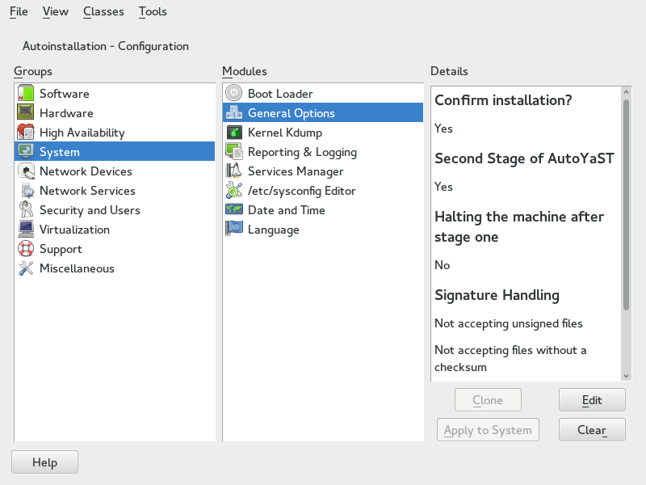

3.2. Using the configuration management system (CMS)
To create the control file for one or more computers, a configuration interface based on YaST is provided. This system depends on existing modules which are usually used to configure a computer in regular operation mode, for example, after SUSE Linux Enterprise Server is installed.
The configuration management system lets you easily create control files and manage a repository of configurations for use in a networked environment with multiple clients.

3.2.1. Creating a new control file
The easiest way to create an AutoYaST profile is to use an existing SUSE Linux Enterprise Server system as a template. On an already installed system, launch . Then select from the menu. Choose the system components you want to include in the profile. Alternatively,
create a profile containing the complete system configuration by launching or running sudo yast clone_system from the command line.
Both methods will create the file /root/autoinst.xml. The cloned profile can be used to set up an identical clone of the system it was
created from. However, you will usually want to adjust the file to allow for installing
multiple machines that are very similar, but not identical. This can be done by adjusting
the profile with your favorite text/XML editor.
Be aware that the profile might contain sensitive information such as password hashes and registration keys.
Carefully review the exported profiles and make sure to keep file permissions restrictive.
With some exceptions, almost all resources of the control file can be configured using the configuration management system. The system offers flexibility and the configuration of some resources is identical to the one available in the YaST control center. In addition to the existing and familiar modules new interfaces were created for special and complex configurations, for example for partitioning, general options and software.
Furthermore, using a CMS guarantees the validity of the resulting control file and its direct use for starting automated installation.
Make sure the configuration system is installed (package autoyast2). Call AutoYaST using the YaST control center or as root with the following command
(make sure the DISPLAY variable is set correctly to start the graphical user interface instead of the text-based
one):
/sbin/yast2 autoyast